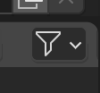
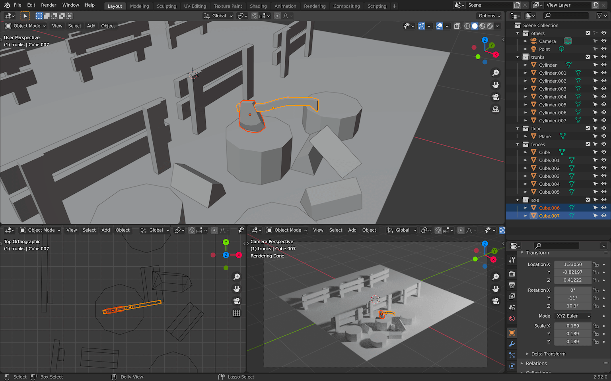
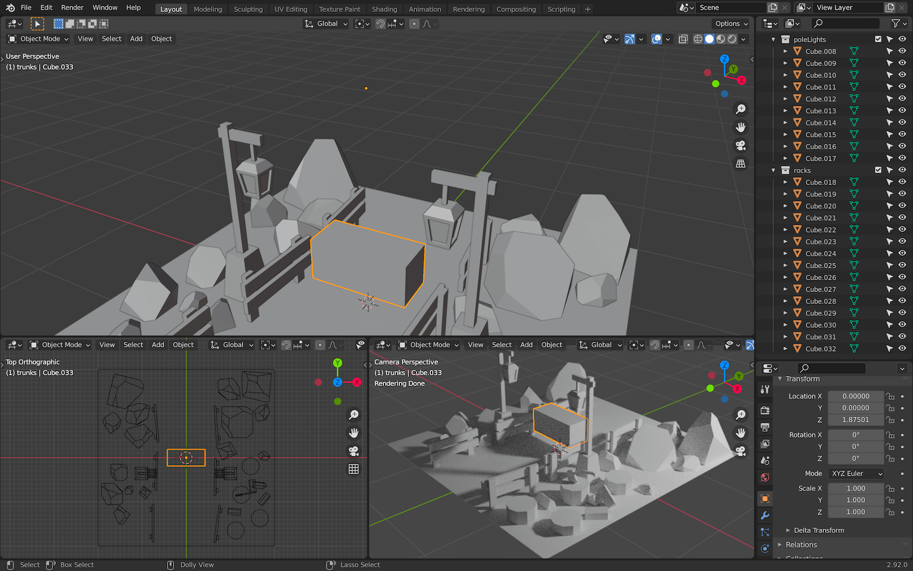

Lesson completed üññ
You've already completed the quiz for this lesson.
⭐️ Selection

A selection by Bruno Simon of the best projects made by Three.js Journey’s students.
Selected projects are shared on various platforms.
Baking
When you do a render in a 3D software like Blender, it usually looks better than the model you import into Three.js, no matter how hard you try to get the exact same lighting and colors. This is because of the technique used while making the render.
Ray Tracing consists of casting multiple rays toward each pixel of the render. These rays start with the geometry we are rendering. Next, they test the direction of each light in the scene to see which part of the geometry is illuminated as well as to test whether the directions of the light bouncing off the geometry are colliding with other objects in the scene. Then, for each of these collisions, more rays are being cast as they bounce off other objects. And it goes on and on like this multiple times. All of the information collected by these collisions is then computed to define the final color of that pixel.
The goal is to simulate real-life lighting and enable visual effects like indirect lighting and soft shadows. As an example, if you place a red object close to a white object, you'll see the white object being tinted with red because rays are bouncing from the red surface to the white surface. In the same way, you'll see that the red object looks brighter when the surface is close to the white object.
This process results in a beautiful realistic render, but doing one render can take many minutes, even hours.
When we are doing renders with WebGL, we need to do it as fast as possible in order to get a good frame rate. We don't have the luxury to spend minutes on just one render. For this reason, rendering in WebGL uses cheaper techniques that don't look as good but at least keep a decent frame rate.
The idea of baking is that we save those Ray Tracing renders into textures that we then use in WebGL instead of using the classic render techniques provided by Three.js.
Here is an example of baked texture:
And here is the result in Three.js:
There is no light, no real-time shadows. It's just the texture you see in the above example being placed on the geometries.
This way, we will see the Ray Tracing renders directly on the Meshes, and it looks awesome. And when we move around the scene, the performance will be great because all we did was to display a texture on a geometry.
Unfortunately, there are some drawbacks:
- We have to bake everything in the 3D software and it's a long process.
- We have to load the textures and if you have a complex scene with a lot of objects, you're going to need a lot of textures. This is bad for loading but it can also result in a short freeze at the beginning of the experience because we need to load those textures into the GPU.
- The lights aren't dynamic. We can't move the lights, and we can't change their intensity or color in real time. We have to do it in the 3D software and re-bake everything.
Choosing to use baking or not is up to you and the project. Keep in mind that you can still mix baked and non-baked materials but it's hard to keep a homogeneous result.
Process
To create that baked scene, we need to go through multiple steps:
- Create the scene in 3D software.
- Optimize all the objects because we need clean geometries and only the surfaces we can see.
- UV unwrap everything.
- Bake the render into texture(s).
- Export both the scene and the texture(s). If we do this, we are going to have just one big texture. But, we can have multiple textures if there are a lot of objects and we want better quality.
- Import everything in Three.js and apply the texture on the mesh.
As a bonus, we will also add some details in Three.js to give more life to the scene like a cool portal effect with fireflies floating around.
Blender
We are going to use Blender to create our scene, bake it, and export it.
If you don't know Blender yet, you should follow the previous lesson dedicated to it. Assuming you now know the basics of Blender, the following steps are going to be a little more direct. Nevertheless, each part will be explained. Take your time and make sure to get everything right before moving forward.
If you are familiar with Blender and concepts like UV unwrapping, you can try to diverge from the lesson and create your own scene. If you're not familiar, you should try to follow the steps exactly. Then, once the project is over, you can try on your own and create your dream scene.
In this lesson, I'll be using the
2.92.0 version of Blender, but
you'll probably use a more recent version. Keep an eye on
potential changes in the interface or in the shortcuts.
Setup
To begin, we create a new Blender file. The default setup is the
one we defined in the Blender lesson but you can use any setup
you like. If you want the same setup, you can also use the
portal.blend file in the
starter:
A Point Light is already present
in the scene with the following parameters.
If the parameters are different from yours, you might be using
Eeevee as the
Renderer Engine. You can change
it now. We will be changing it anyway a little further down.
Start by deleting the default cube or any default object you
have in the scene, but keep the light. Use
X to delete objects.
You can now save the file. During the rest of the lesson, remember to save regularly.
Floor
We are going to start with the floor.
Create a simple plane with
Shift + A
Scale that plane so that it covers 4 units. You can look at the
grid on the floor of the scene to see what 4 units looks like.
Also, those units can be anything you want. Actually, you might
see something like 4m because
your Blender is configured to use meters. This doesn't matter
because 4 units in Blender will result in 4 units in Three.js.
To do that, you can change its size in the small menu that shows up when creating it:
You can also scale it using
S after you've created it (you
can use CTRL to round the
value):
Or you can go to the
Edit Mode with
TAB and then scale it the same
way:
The result will actually be slightly different according to
which technique you used. If you scale the object while not
using the Edit Mode, you'll
apply a transformation on the object itself and not on the
geometry.
This might become a problem later but, later on, we are going to fix it anyway for every object. So use the technique you prefer.
Fences
For the first objects in the scene, we can start with the fences. They are simple to create and will give some life to our scene.
We are going to create 2 flat boxes for the poles (posts) and 2 other flat and wide boxes for the planks (rails).
Create the first pole by making a cube with
SHIFT + A. Go into
Edit Mode with
TAB and start scaling it:
If you don't get the exact shape at first, it's not a problem. You can always change it later.
Right now, we are in
Edit Mode and we are going to
stay in that mode for the rest of the fence. We can still create
primitives and they will count as part of the same geometry.
It's not mandatory but it might get handy to have only one
geometry for each fence.
While in the Edit Mode, select
the box (if that's not already the case) with
A, duplicate it with
SHIFT + D and move it to the
side. You can press Y right
after duplicating it to force the movement on the
Y axis only:
Again, duplicate it with
SHIFT + D, scale it with
S and move it with
G to create the two other
planks:
Now that you have all the components of the fence, you can rearrange it any way you want. You can also center the whole geometry so that the origin (the small orange dot) is roughly at the bottom center of the fence:
Once you are happy with the result, leave the
Edit Mode by pressing
TAB:
You can now duplicate the fence to create 6 fences with
SHIFT + D. Make sure you are in
Object Mode and add some
randomness to their position and rotation:
As always, don't spend too much time on positioning stuff. You can always do that later once you have all the objects.
First render
Now that we have some stuff visible, we can try to do a first render. Even if the final goal is to export our scene into Three.js we want to see how it looks in Blender because the baking technique is supposed to get us the same result. It's also a good opportunity to create cool renders to share with the community or with your friends.
Camera
Create a camera with SHIFT + A:
While hovering over one of the
3D Viewport areas (bottom right
in our case) and having the camera selected, press
NUMPAD 0. This will position the
camera so that you will see what it views in your viewport.
Select the camera from another
3D Viewport area and move it
with G so that the scene fills
the view:
You can now change the camera shading to
Rendered buy pressing
Z once, in order to show the
Shading wheel:

You now have a preview of the final render that is seen by the camera:
By default, Blender is using the render engine Eevee. Eevee is a little like WebGL. It's really fast, it doesn't use Ray Tracing, but it also doesn't look as good as the other engine named Cycles.
While doing basic modeling for real-time purposes, it can be useful to use Eevee. But in our case, we want the best looking result, which is why we are going to switch to Cycles.
In the Properties area, go to
the Render Properties tab and
select Cycles as the
Render Engine:
The camera preview should display a better looking result:
Quality
There are many parameters to control the quality but the most
important one is Sampling.
Go to the same
Render Properties tab again and
look at the Sampling section:
The higher the value, the better, but also the longer it will take to do the render.
-
128is a decent value, but you might see some artifacts which are like a visual noise in the render. -
256will look better and the noise shouldn't be too visible. -
512should be more than enough for a good looking result. -
1024to be sure of the quality, but only if your computer is performant enough. Otherwise, you may have to wait hours.
Obviously you can use any intermediate value like
200 or any other number, but I
like to keep numbers that are a power of 2 (developer reflex).
For now, we will keep 128 for
the Render and
32 for the
Viewport.
Resolution
Another parameter is the output resolution.
You can access this property in the
Output Properties tab:
Here you can change the width and height of the output image but also scale it in case you want to do a smaller render without having to calculate the width and height.
Let's use a classic resolution with
1920x1080 and no scale (100%).
First render
It's time to do our first render.
Press F12 to start rendering in
a new window. Wait a little while and you'll see the result
appearing square by square:
Once the render is done and while the render window is still
open, press ALT + S to save the
image.
Here you can choose the image format, where to save it, and the quality:
This part is up to you and depends on the image quality you want.
Tree trunks
Let's continue our scene and create some tree trunks.
Because we want to create a low poly style, we will create some cylinders with only 10 sides.
Create a Cylinder with
SHIFT + A and, in the creation
menu that should appear on the bottom left, choose
10 vertices:
Move the trunk to the side closest to the camera with
G and resize it to match the
fences' scale with S:
Duplicate it with SHIFT + D and
create a bunch of other trunks with different heights.
You can transform the geometry itself by moving the top face of
the cylinder on the Z axis or
you can scale it.
Make sure they don't float above the ground. These are not magic trunks:
A little later, we are going to create an axe stuck in one of those trunks. We can create some split logs on the ground now to show what the axe has done.
Start by creating a cylinder again, but this time, in the
creation window, choose
Triangle Fan as the
Cap Fill Type.
If you switch to the
Wireframe shading, you'll see
that the top and bottom parts of the cylinder are now triangles:
This will enable us to remove the parts we don't need and end up with only a cut of the cylinder.
Select the log, go to
Edit Mode with tab and remove
the parts of the log you don't want. In our case, we can keep 2
portions of it. Press X to
remove the faces you selected.
Take your time, remove part by part. Undo if you did something wrong:
It's a good start but we are missing faces.
While you are in Edit Mode,
switch to vertex select:
Now select all the 4 vertices of the face you want to create:
And press F to create a new face
out of those 4 vertices:
Do the same for the other side. You should get a good-looking split log:
Resize the log, leave the
Edit Mode and duplicate it a
bunch of times while spreading them on the floor around the
trunks:
Organizing
Currently, we are creating objects without taking care of how we structure our scene.
As with everything, it's good to organize things a little.
In Blender, we have something called
Collections. You can see that
they are like folders in which you can put objects. Be aware
that they don't act like Three.js groups which you can scale and
all the objects inside will scale as well. It's more like an
easy way to organize your objects.
We could have used a more classic grouping solution by using Blender's parent system, but doing so might create a complex scene graph that might break our code in later lessons. If possible, try to keep a scene graph as flat as possible.
In the Outliner area, you can
see that we have already two collections:
The Scene Collection is the main
one. You can't do much with it.
The Collection, is the default
one in which all objects are added by default. You can rename it
and you can also deactivate it using the checkbox on its right:
This will hide the objects both in the viewport and in the render.
You can have more control over it by adding other buttons. To do
that, click on the Filter button
on the top right corner of the
Outliner:

Then activate the following buttons:
With the arrow icon, we can now make a collection unselectable but still visible.
We are not going to rename the objects just now. Instead, we are going to create collections and put the objects in them.
To create a new collection, you can right click on an empty part
of the Outliner, choose
New Collection and then write
the name you want.
Or you can select the object you want in the scene, press
M, and choose
New Collection (or choose an
existing collection):
Organize your Outliner like
below, and make the
others collection unselectable:
From now on, we will organize all objects into collections.
You can also add collections inside other collections.
Collections are also useful to select every object it contains.
Right click on the collection and choose
Select Objects:
Axe
Let's create a small but more difficult part of the scene, the axe.
We don't need to make it at the right scale for now. That way, we can work on much bigger shapes.
We are going to start with the head of the axe.
Head
Start with a flat cube:
Go in Edit Mode and add some
loop cuts with CTRL + R (when
loop cutting, use the WHEEL to
add more loops):
Move the vertices to round the bottom part and shrink the top
part. How you do this step is up to you and the shape you want
to achieve, but try to keep a symmetrical shape. Select the
vertices you want to change and play with
G to move them and
S to scale them. Don't forget
that you can force an axis by pressing
X,
Y or
Z after starting a
transformation:
Add a loop cut in the slice (CTRL + R):
Select the following vertices:

Move them up along the edges by pressing
G twice to move them along their
edges:
We have our axe head. Don't forget to put it in a collection:
Handle
We can now create the handle.
Start with a box going through the axe head:
Add some curve by creating loop cuts with
CTRL + R in
Edit Mode and moving the
vertices. You can also extend the tip of the handle by selecting
the face and pressing E to
extrude it:
Resize and place the axe on one of the trunks and don't forget
to put the handle in the
axe collection:

Pole lights
For the pole lights, use the same techniques as before. You should be able to handle this yourself.
Don't forget to put everything in a
poleLights collection.
Create the base:
Add beams:
Add the rope that will hold the lamp:
Add the lamp itself:
We want to create recesses in the sides of that lamp.
In Edit Mode select the 4 sides
of the lamp as well as the one below:
Press I to create an inset and
LEFT CLICK immediately without
moving your cursor:

By doing so, we created an inset but with the wrong offset because we didn't move the mouse before clicking. But as you can see, we can still change the parameters of the inset with the menu that opened in the bottom left corner.
Check Individual and play with
the Thickness value. Make sure
that the outer frame is big enough or you might have a problem
later:
We now want to push those faces inside. We are going to do an
extrude, but first, change the
Transform Pivot Point to
Individual Origins:
This way, the extrude will be applied on each face independently.
Press E and, as with the inset,
LEFT CLICK immediately in order
to play with the extrude parameters using the menu that should
appear in the bottom left corner.
Set the Orientation to
Normal and play with the
Z value:
You can set the
Transform Pivot Point back to to
Bounding Box Center:
That's a good-looking light, but we also need to separate those faces from the frame. This will get handy later.
Make sure the inside faces are still selected while in
Edit Mode and press
P to open the separation menu.
Choose Selection:
You should have two different objects for the light. One for the frame and one for the faces that will cast the light later.
Select the entire pole light and duplicate it, but this time
using the ALT + D instead of
SHIFT + D. Place it on the other
side:
This will create a
Linked Duplicate. By doing that,
editing one geometry will automatically edit all the linked
geometries. This way, it's easier to keep those two pole lights
identical.
Now would be a good time to save and do a render (F12).
Rocks
The rocks are a little bit tricky but fun to make. We are going to start with cubes and slice them randomly.
Make a rocks collection and
create one cube inside:
We are now going to slice that cube.
Go in Edit Mode and select all
the faces (if that's not already the case).
To slice the cube, we can use the
Bisect tool. Unfortunately, this
tool is a little bit hard to find.
You can access it using the
Tools menu on the left by
holding LEFT CLICK on the icon
as shown below and choosing
Bisect (if you can't see the
left menu, press T):
You can also access it in the
Mesh menu on the top of the
3D Viewport:
Or you can press F3 and search
for Bisect:
You'll have to do this every time you want to cut your cube.
Now that the Bisect is active,
click and drag through the cube to create a cut:

With the bottom left menu, you can choose to clear one side of
the cube with Clear Outer and to
fill the hole it created with
Fill:
There you go, you did your first clean cut.
Select all the faces again with
A and repeat the process with
random angles. Try to break the squareness of the initial shape
and repeat the process for a bunch of other cubes.
Do not try to refine the vertices. You might break the flatness of the faces.
You should also try to keep the origin of the geometry on the floor. This will get handy if we want to scale them.
As always, take your time and don't spend to much time on details.
Do that for 3 or 4 cubes:
Now that you have a bunch of rocks, duplicate / scale / rotate and move them all around the scene. It's time to fill the emptiness. Don't be afraid to re-use the same rocks. People won't notice it and if they do, they'll think it's funny.
Add more big rocks in the back to create some height without blocking the view. Use small rocks in the front to add details:
Portal
It's time to add the main component of the scene, the portal.
We are going to start with the bricks positioned in a circle.
Create a portal collections and
add your first brick to it:
Then, go to Edit Mode and move
the brick geometry down so that its origin is way above:

Leave the Edit Mode and
duplicate the brick using
ALT + D to create a
Linked Duplicate (like we did
for the pole light) and while still in the duplicate mode rotate
it on the Y axis.
It's very important to do the rotation before validating the duplicate:
We are going to repeat the operation. To do that, press
F3 and search for
repeat last:
This will re-do the last action (which was the duplicate) and because we also did the rotation in that duplication, the new brick will also rotate. Do that multiple times until you get an almost full circle and if the rotation goes in the wrong direction, it's okay, we can duplicate extra bricks:
If those steps are too hard, simply duplicate the brick using
ALT + D (not
SHIFT + D) and place them
manually.
Rotate the whole thing so that the open part is at the bottom:
Select one of the bricks (if possible one aligned with the scene
like the one on the top) and go into
Edit Mode:
As you can see, all the bricks look like they are being edited. This is because they are linked duplicates and editing one will edit the others.
Move the vertices so that the bricks don't overlap anymore:
Leave the Edit Mode, scale and
move the whole portal to the back and slightly above the floor:
Add some stairs with boxes and don't forget to put everything in
a collection named portal:
We need to fill that portal.
Create a circle and make sure the
Fill Type is on
Triangle Fan:
Move it to the center of the portal. It doesn't have to be perfect, as long as the disc covers the hole and it doesn't overflow.
To rotate it to a perfect 90-degree angle, press
X once (or
Y depending on your scene) when
doing the rotation to force the axis. You can also press
CTRL while moving the mouse to
round the value:
And that's it for the modeling part.
Now that you have all the elements, you can improve the general setup, move objects, center the camera, move the light, etc.
Make sure that every object is properly organized in collections and don't forget to save.
Materials
It's time to add some color to the scene.
First, make sure that the lights you have in the scene are white and that the intensity is strong enough. This way, you'll be able to appreciate the colors in a neutral environment. We will apply some changes to the lights later.
You should also change the main
3D Viewport to
Material Preview shading (by
pressing Z) or even
Renderer shading to really see
what you are doing:
Grass
Select the floor. In the
Properties area, go to the
Materials Properties tab and add
a material with the new button:
You can rename that material
grass at the top of the material
section:
Then you can play with the different properties. For the style
we want, you can simply change the
Base Color and set the
Roughness to the maximum:
Finding the right color is up to you, but don't spend too much time on it. You need to see the overall scene with all the colors before tweaking.
Wood
Now select one of the trunks and create a new material named
wood.
By the way, you might already have default materials in your
scene. Usually, the default material created with the scene is
named Material. You can use that
material and change its name if you don't like to have unused
stuff hanging around:
To apply this material to all other wood objects in the scene,
instead of changing them one by one, you can select them by
right clicking on the collection and choose
Select objects:
This will select all the objects in the collection:
Make sure that the one with the material is the active one (with
a brighter outline). You can use
SHIFT + LEFT CLICK to change the
active one:

You can now press CTRL + L to
open a menu in which you can choose what you want to apply from
the active object to all the selected objects. Here, we want to
apply the Materials:
All the selected objects should have the
wood material:

We can do the same with the fences.
- Select all the fences.
- Select one of the trunks.
- Make sure the trunk is the active object.
-
Press
CTRL + Land chooseMaterials.
All the fences should have the
wood material applied:
Repeat the steps for the wood part of the pole lights and also the axe handle:

Rocks
Select a rock and create a
rock material:
And then apply this
rock material to all rocky
materials (the rocks, the portal bricks, the portal stairs and
the pole light bases):
Metal
The lamp frames can be made of a darker metal.
Select one of them and apply a material named
metal:
The other lamp frames will automatically get the same material because they are linked.
Apply the same metal material to
the axe head:
Emissive lights
We want the portal and the lamp to emit lights. This is possible
with a type of material named
Emission.
Pole lights
Select one of the lamp lights (the faces inside) and create a
new material. Name it
poleLightEmission and instead of
a Principled BSDF, choose
Emission for the
Surface property:
This kind of material will emit light.
Change its Color to a warmer one
and increase the Strength to
something like 80:
Portal
Create another Emission material
named portalEmission. Set the
Strength to something like
40 and use the color you want
(we can change those later):
We can't see much of the light, but if you remove the all other lights you have in the scene, you'll see that it's working pretty well:
Ambient lighting
One final touch we can add is an ambient lighting to control the general illumination of the scene.
If you haven't done so yet, delete all the lights in the scene.
Then, create an Area Light,
scale it up, move it to the left of the scene and make sure that
the perpendicular stroke going out of the light is targeting the
middle of the scene:
Add it to the others collection.
An Area Light is a rectangular
plane that creates a diffuse light. The bigger the plane, the
more diffuse. This will help create an ambiance but also diffuse
the shadows for a smoother result.
Increase the Power of the light
to something like 240 and change
the Color:
Final tweaks
Now is a good time to tweak the colors and lighting. Here, with
the orange Area Light, we went
for a rising sun effect:
But if we reduce the light of the portal, change the color of
the Area Light to a blue, and
tweak the colors of the objects in the scene, we can create a
night effect:
You can also tweak the portal color:
Choose the settings you like most. What we will be doing in the rest of the lessons will still work.
Final render
That's it for the creation part. In the next lesson, we will learn how to optimize, bake, and export everything.
In the mean time, you can create and share your work. To improve
your renders, don't forget to increase the sampling in the
Render properties tab. Somewhere
between 512 and
1024 should be more than enough:
In the same section, you can also get rid of the visual noise by
checking the Denoise property
and choosing NLM: